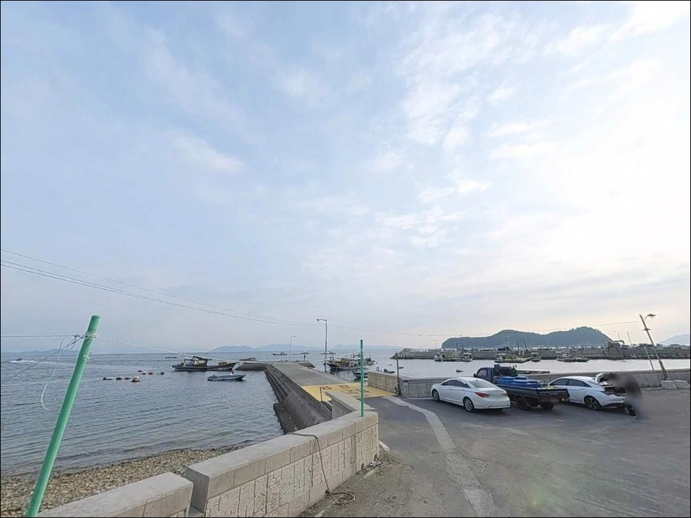
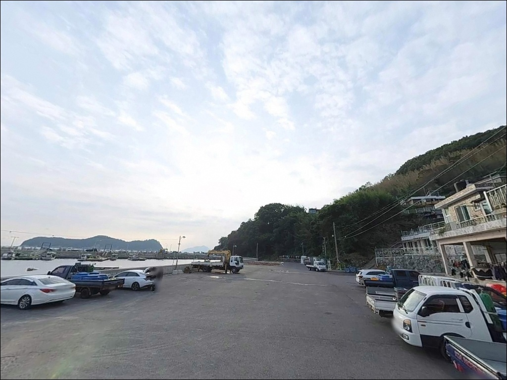
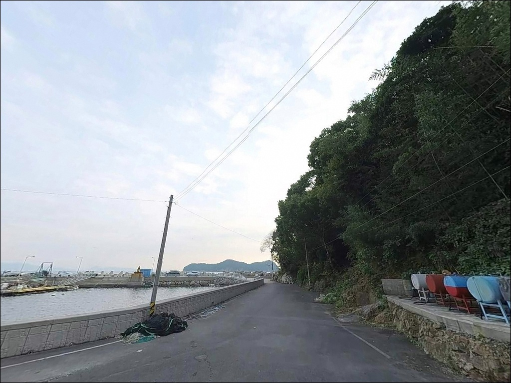
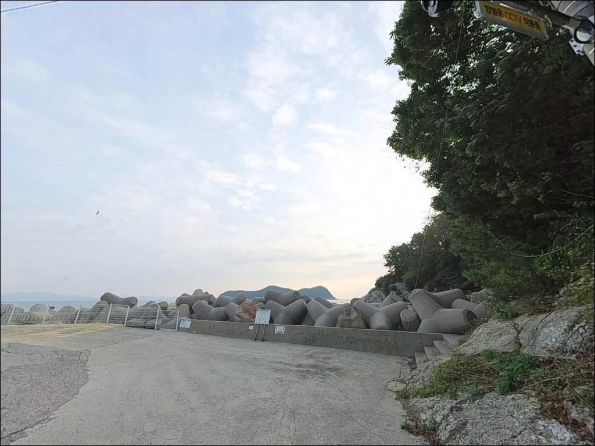
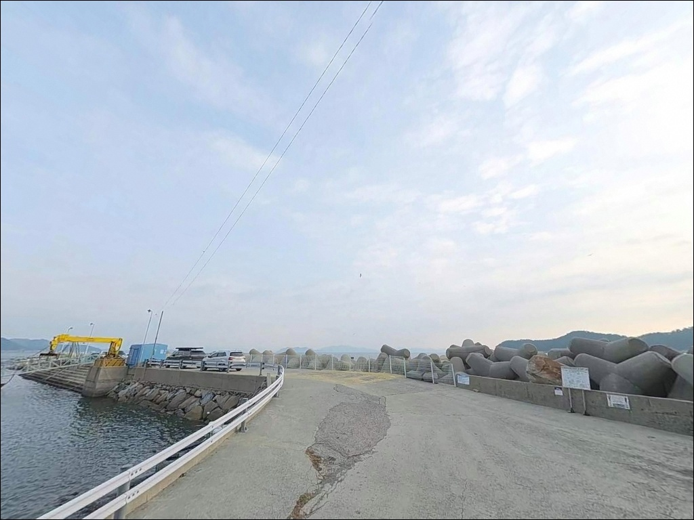
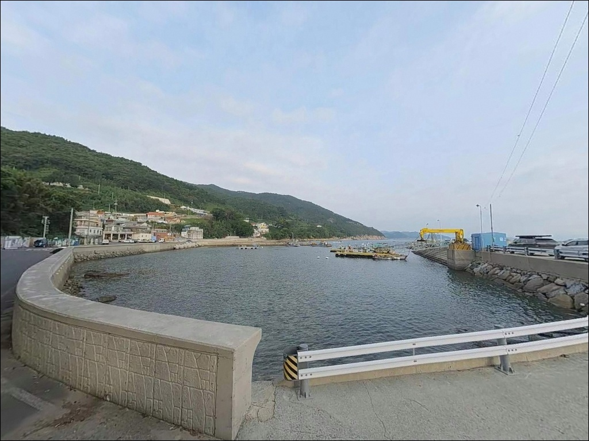
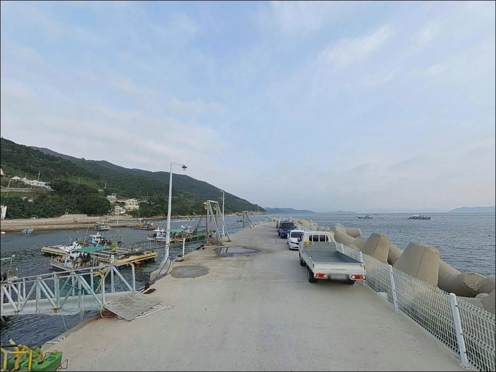
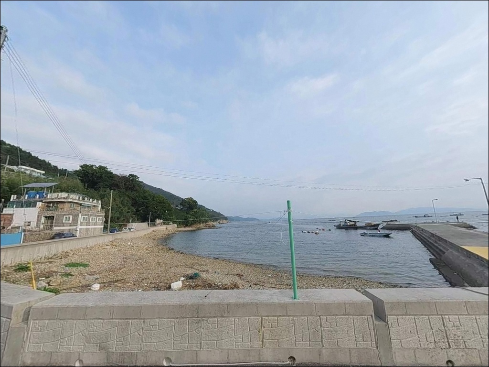

포인트 안내
노구방파제
경남 남해군 미조면 송정리 121-2
외항 테트라포트 가용 자리가 한정적이어서
조류 흐름과 타이밍을 계산하지 않고 가면
자리를 잡지 못하는 상황이 생깁니다.
초들물~중날물 외 시간대에 도착하면
기다림이 길어지거나 내항 쪽으로 밀려나는
구조입니다.
노구방파제는 남해 동남쪽 끝자락,
미조면 송정리 노구마을 안쪽에 자리한
어촌정주어항입니다.
방파제 길이 65m 규모의 소형 항이지만
외항 테트라포트, 몽돌밭 갯바위, 석축 방파제가
A·B·C 세 구역으로 나뉘는 복합 포인트 구조입니다.
무늬오징어 산란 자리로 낚시 전문지에 이름을 올린 곳이기도 합니다.
이 글은 노구방파제의
지형 구조, 진입 여건, 낚시 스타일별 공략 조건,
인근 플랜B 포인트에 집중합니다.
조황 단정이나 특정 어종 보장은
이 글의 범위에 포함되지 않습니다.

1. 진입 동선과 포인트 접근성
노구마을로 들어가는 방법은
77번 국도에서 3번 국도 미조항 방면으로 진입한 뒤
송정리 방향 지선도로를 따라 들어오는 동선입니다.
마을 진입로까지는 무리 없이 닿을 수 있지만,
마을 내부로 이어지는 구간은 1~1.5차선 수준의
좁은 마을도로로 바뀝니다.
대형 SUV나 캠핑 장비를 갖춘 차량이라면
출발 전 위성지도로 진입로를 먼저 확인해 두는 것이
기본 준비입니다.
대형 캠핑카나 카라반은 현장 진입 자체를
사전에 답사하지 않으면 진입 후 회차가
어려워질 수 있는 구조입니다.
주차 후보는 크게 세 곳입니다.
호안(연장 150m) 인근 공터가 가장 현실적인 선택이며,
방파제 입구 평탄 공간과
몽돌밭 접근로 주변 노상 구간도 활용할 수 있습니다.
소형 어항 규모상 동시 수용 대수가 많지 않아
성수기에는 조기 확보가 유리합니다.

2. 차박 여건과 야간 체류 환경
노구방파제의 차박 여건은
단독 차박지로 삼기에는 공간이 협소한 편입니다.
호안과 방파제 입구 공터를 합쳐도
여러 대가 여유 있게 자리 잡기에는
한계가 있는 구조입니다.
낚시 후 짧게 대기하거나
한 대 규모로 조용히 머무는 방식에 어울립니다.
야간 환경은 방파제 가로등이 있어
완전한 암흑은 아닙니다.
마을과 인접해 생활 불빛이 일정 수준 유지되고
차량 통행도 어민 출입 외에는 거의 없는 편이라,
조용한 밤낚시 대기 여건으로는
나쁘지 않은 환경입니다.
다만 화장실이 현장에 없습니다.
기존 공중화장실이 철거된 것으로 확인되는 구조이므로
진입 전 미조항 또는 송정솔바람해변 시설을
이용하고 오는 것이 현실적인 준비입니다.
장박보다는 당일 낚시·단박 대기 형태가
이 포인트의 차박 활용 패턴과 맞는 편입니다.


3. 주변 편의시설 및 인프라 현황
노구방파제 반경 1km 이내에는
편의점이나 낚시점을 기대하기 어렵습니다.
노구마을 자체가 소규모 어촌이라
완전 자급 체제로 진입하는 것이
현실적인 준비 방식입니다.
약 3km 거리에 미조항 소재지가 있습니다.
미조항 인근에는 편의점, 식당, 낚시 소품을 구할 수 있는
기본 인프라가 집중되어 있어
출조 전 채비와 먹거리를 이곳에서
한 번에 해결하는 동선이 효율적입니다.
삼동면 물건리 방향으로 10km권을 넓히면
낚시점(물건낚시)이 운영 중인 구역에 닿습니다.
응급 상황은 미조면 소재지에서
소규모 의원급 이용이 가능하며,
대형 병원은 남해읍 방향으로
약 20km 거리에 있습니다.

4. 방문 전 반드시 챙겨야 할 준비사항
노구방파제 방문 전 가장 먼저 확인할 것은
물때와 조류 타이밍입니다.
남해도와 대왜도 사이 해역 특성상
창조류 최대 1.8kn, 낙조류 최대 2.3kn 수준의
유속이 발생하는 구조입니다.
초들물~중날물 집중 공략이 이 포인트에
맞는 기본 타이밍 전략입니다.
테트라포트 외항 구간은 발이 끼거나
미끄러지는 사고가 생길 수 있습니다.
스파이크 신발 착용은 선택이 아닌 필수이며,
야간 테트라포트 이동 시에는
반드시 헤드랜턴과 구명조끼를
함께 착용한 상태에서 이동해야 합니다.
에깅 채비 손실은 해초와 테트라 경계 구간에서
잦은 편이므로 여분 에기를 넉넉하게 준비합니다.
노구마을은 어민 생활공간과 바로 붙어 있어
이른 아침 어민 작업 동선을 방해하지 않는
주차 위치 선택이 기본 매너입니다.
출조 전에는 노구방파제 조황, 미조면 방파제 조황으로
최신 현황을 먼저 검색하는 편이 좋습니다.

외항 테트라포트가 조과를 가르는 조건
노구방파제는 세 구역으로 나뉩니다.
A포인트는 몽돌밭과 갯바위가 이어지는 구간으로
원투와 루어 방식에 적합한 지형입니다.
B포인트는 석축 방파제로 자리가 협소하며
발밑 수심 공략 위주의 민장대 낚시에 어울립니다.
C포인트 외항 테트라포트가
이 포인트의 핵심 구간입니다.
C포인트는 방파제 길이 65m 기준 외항에
테트라포트가 쌓인 구조입니다.
평균 수심 4~6m이며 끝단 정면은
10m 이상으로 깊어집니다.
테트라와 해초대가 발달한 경계 구간에서
무늬오징어와 볼락의 서식 밀도가 높은
지형 조건을 갖추고 있습니다.
바닥층은 모래와 갯바위가 혼재하는 구조라
원투 채비 손실은 크지 않은 편이지만
테트라 주변 해초 구간에서는
에기가 걸리는 경우가 있습니다.
조류가 완만해지는 정조 타이밍 직전에
포지션을 잡아두는 것이 이 포인트를
제대로 공략하는 방법입니다.
출조 전에는 최신 조황을 반드시 검색해 보시기 바랍니다.


6. 포인트에 어울리는 낚시 스타일
이 포인트에서 가장 비중이 높은 낚시는
무늬오징어 에깅입니다.
봄~초여름 산란 시즌에 외항 테트라 경계와
해초대 수심 4~6m 레인지를 집중 공략하는 방식입니다.
가을에도 시즌이 이어지는 편이라
연중 에깅 운용이 가능한 해역입니다.
야간에는 볼락 라이트게임이 어울립니다.
방파제 가로등이 집어등 역할을 하는 구조이므로
조명 아래 그림자 경계를 따라
소형 지그헤드 채비로 슬로우 리트리브를
운용하는 방식이 이 포인트와 잘 맞습니다.
11월 이후 씨알이 올라오는 경향이 있어
겨울 볼락 시즌에도 유효합니다.
원투낚시는 A포인트 몽돌밭 갯바위 구간과
방파제 끝단 외항 방향에서 운용합니다.
도다리, 붕장어, 노래미가 기대 어종이며
비 온 뒤에는 농어 입질이 잦아지는
해역 특성이 있습니다.
찌낚시는 외항 테트라 주변 중하층 흘림 방식으로
감성돔과 벵에돔을 노릴 수 있는 구간입니다.

7. 대안 포인트와 플랜 B 동선
노구방파제에서 자리가 여의치 않거나
조류가 너무 강할 때의 1순위 대안은
미조항 방파제입니다.
약 3km 거리에 있으며 규모가 크고
주차 여건이 안정적입니다.
편의시설도 가장 집중된 거점이라
이동과 동시에 채비 보충이 가능합니다.
같은 미조면 송정리 해안선 위에는
대지포방파제, 가인포방파제, 항도방파제,
초전방파제 등 소형 방파제가 연속 배치되어 있습니다.
노구방파제와 동일한 해역 조건을 공유하면서도
방향과 내·외항 노출 정도가 달라
바람·파도 상황에 따라 골라 쓰는
대안 포인트로 활용할 수 있습니다.
노구마을 앞바다에는
마안도, 콩섬, 팥섬이 있습니다.
마을 어선으로 10분 이내 진입이 가능하며
갯바위 전문 낚시를 원한다면
현지에서 어선을 섭외하는 방식이
현실적인 선택입니다.
차박 대안은 미조항 주차 공간이 가장 무난합니다.

테트라포트 자리 하나가
노구방파제의 모든 것을 결정합니다
무늬오징어 에깅이나 야간 볼락 라이트게임을
즐기는 낚시인이라면
노구방파제의 지형 조건은
잘 맞는 구조입니다.
외항 테트라포트와 해초대가 만들어내는
수심 경계가 이 포인트의 핵심 자리이며,
조류 타이밍과 자리 선점이
조과를 갈라놓습니다.
반면 화장실이 없고 주차 공간이 좁아
편의시설 없는 포인트에 익숙하지 않은
방문자에게는 현장 도착 이후
불필요한 이동이 생기는 구조입니다.
미조항 선결, 물때 확인, 진입로 사전 점검,
이 세 가지를 갖추고 간다면
남해 미조권 에깅 루트의
기점으로 활용할 수 있는 포인트입니다.
조용한 어촌 마을 안쪽에 차를 세우고
테트라포트 앞에 자리를 잡는 낚시와
짧은 하룻밤 차박을 함께 즐기려는 분이라면,
노구방파제와 미조항을 묶어
출조 동선을 짜는 방식이 이 일대를
가장 효율적으로 쓰는 방법입니다.